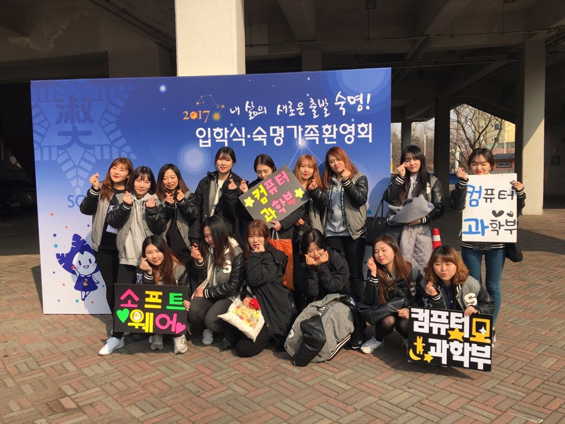
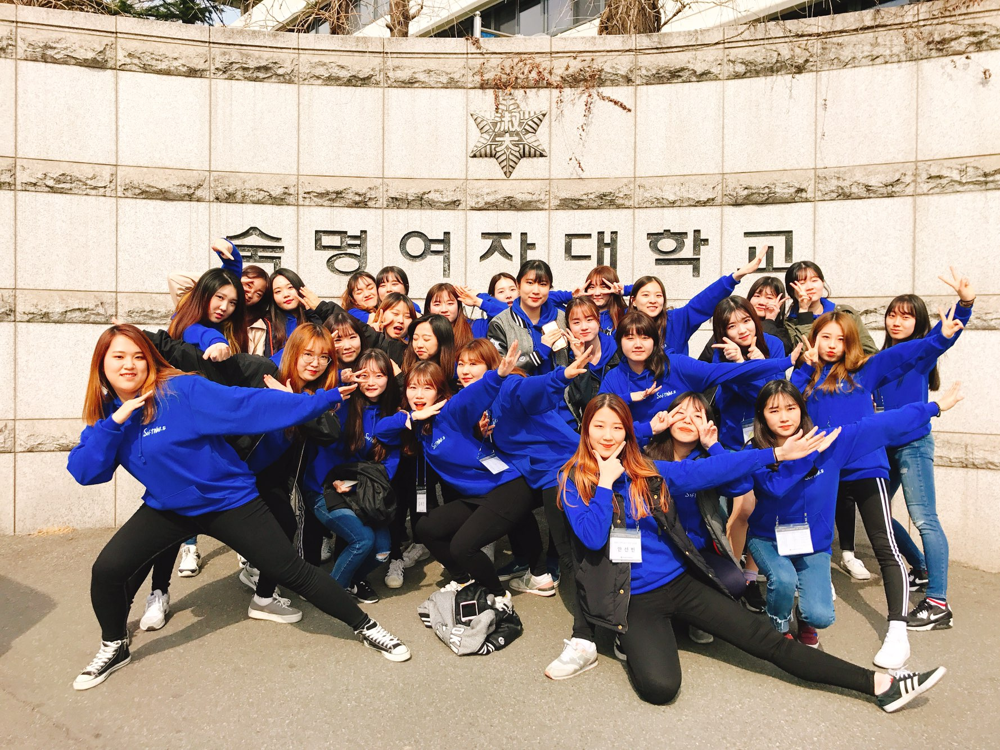
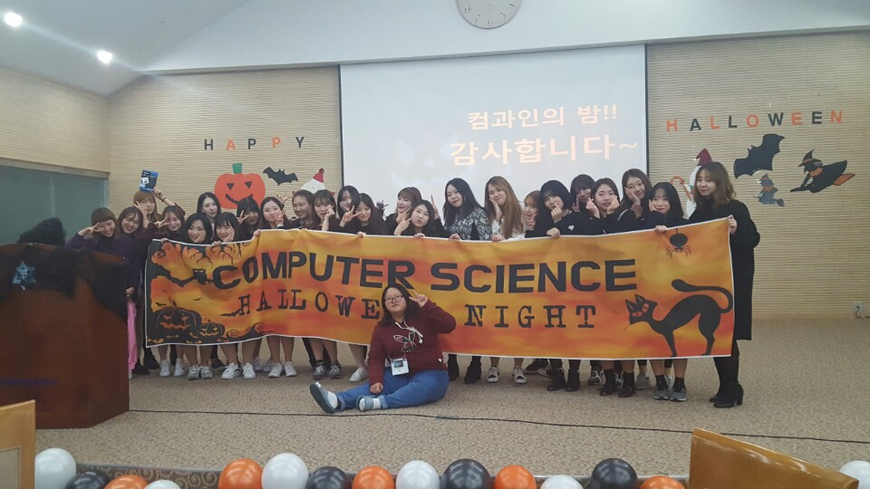
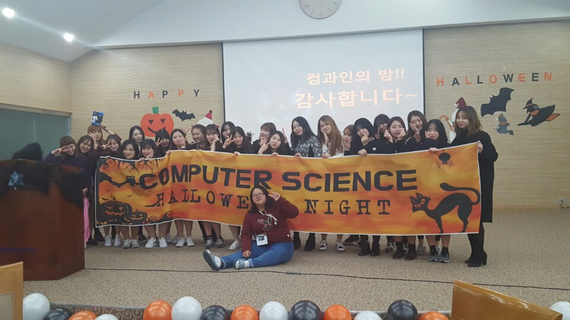
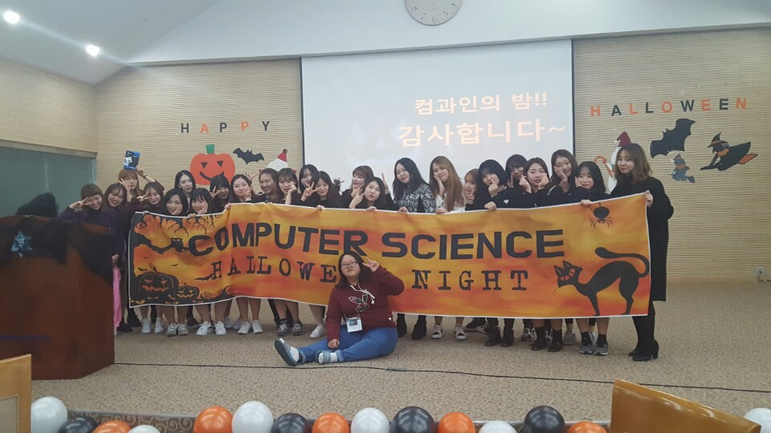

컴퓨터과학과 과학생회
2016.3 ~ 2017.12 (2년)
2년동안 과학생회 활동을 하면서 여러가지 행사를 진행 및 기획하였습니다.
과엠티, 축제, 컴과인의 밤, 간담회, 오티 등 같이 큰 행사뿐만 아니라 시험 간식배부, 성년의 날
장미 및 향수 배부, 스승의 날 행사 기획 등 작은 행사까지 직접 준비하고 활동했습니다.
힘든 일도 많았지만 동기 및 선배들과 같이 봉사하며 과에 더 애정을 가지고 여러 크고 작은 일들에
참여 할 수 있어서 좋았습니다.
Gallary


 

